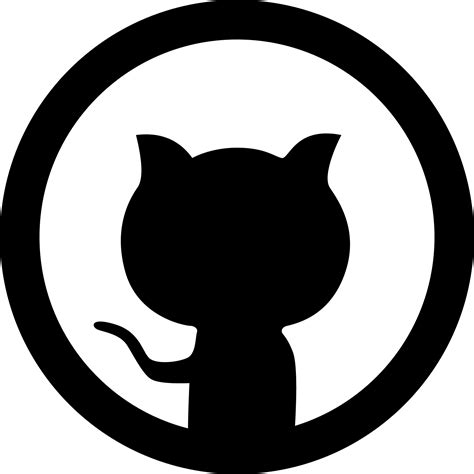

<!-- footer to avoid repetition -->

<footer class="footer">
  
  <a href="https://orcid.org/0009-0006-1349-0477" target="_blank" title="ORCID"></a>
  <a href="https://www.researchgate.net/profile/Anouar-Akacha-Delenda-2?ev=hdr_xprf" target="_blank"
    title="ResearchGate"></a>
  <a href="https://www.linkedin.com/in/anouar-akacha-delenda-0602061b1/" target="_blank" title="LinkedIn"></a>
  <a href="https://github.com/anouarDELENDA" target="_blank" title="GitHub"></a>
  <a href="https://x.com/AnouarAkacha?t=UzoofzNJHqUM6SRo7axR5A&s=09" target="_blank" title="X (Twitter)"></a>
  <div class="last-updated">© 13/11/2025 Anouar Akacha Delenda</div>
</footer>